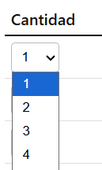
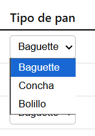
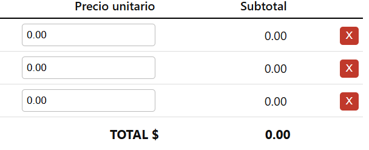

Esta es la vista principal
Diseñada para evitar confusiones en la hora de consulta de informacion, tener una navegacion agradable para el usuario, distribuida de tal forma que el usuario tenga una vista con mayor interaccion y no sea invasiva a la vista
Boton Informacion: Boton destinado para enviar a la hoja de informacion de la pagina, colocado arriba a la izquierda del cuadro principal para una mejor interaccion
Titulo del documento: Colocado arriba de todo de izquierda a derecha para una identificacion de la pagina, en titulo de tamaño de letra grande para una mejor visualizacion
Fecha: colocado en la izquierda de arriba del cuadro, para una mejor identificacion mostrando el dia, mes y año para comodidad de lectura
Numero de nota: Recuadro colocado a la izquierda bajo fecha para mejor identificacion, mostrando el numero de nota que se esta llenando actualmente
Tabla de informacion: Tabla de informacion colocada al centro del cuadro de vista, para una mejor interaccion al usuario teniendo datos de llenado del reporte como Cantidad, Tipo de pan, Precio unitario y Subtotal para identificar el dato a llenar
Campo cantidad: Campo destinado para llenar la cantidad de pan vendido, colocado de forma seleccionable en la tabla de informacion para una mejor interaccion y comodidad del usuario
Campo tipo de pan: Campo destinado para seleccionar el tipo de pan vendido, colocado de forma seleccionable en la tabla de informacion para una mejor interaccion y comodidad del usuario
Precio unitario: Campo de texto para ingresar el precio unitario del tipo de pan vendido, colocado en un espacio grande para comodidad del usuario
Subtotal: Campo de texto actualizable que toma los datos de seleccion de unidades por el precio unitario dando un total, colocado al final de la linea de informacion para tener una mejor visualizacion del total a pagar
Cruz: Cruz colocada al final izquierda de la fila que se esta llenando para poder eliminar la fila en cuestion, de color rojo para una mejor identificacion
Total: Texto actualizable colocado por debajo de los subtotales para identificar el total de suma de subtotales, con un tamaño de texto grande para mejor identificacion
Barra de herramientas colocada por debajo de la tabla de llenado para una mejor interaccion hacia el usuario
Boton agregar fila: Boton colocado en la barra de herramientas para agregar una nueva fila de llenado en la tabla de informacion, con un color diferente para una mejor identificacion
Boton Generar Nota (incrementar No.): Boton colocado despues de agregar en la misma barra de herramientas para un mejor acceso al usuario destacada de un color diferente para una mejor identificacion, destinado para generar la nota y aumentar el numero de nota
Imprimir: Boton colocado en la barra de herramientas para un acceso comodo destinado para imprimir el reporte actual que se esta llenando
Cerrar Sesion: Booton para cerrar la sesion actual, colocado al final de la parte de izquierda asi teniendo una navegacion final del usuario